Mercedes-AMG GLS63 2018
Mercedes-AMG GLS 63 4Matic 2018– Anh chàng đầy cá tính
Mercedes-AMG GLS 63 được trình làng tại triển làm SUVenture diễn ra tại Hà Nội vào giữa tháng 6 vừa qua đã làm nức lòng người yêu xe trên cả nước. Mercedes-AMG GLS 63 là phiên bản SUV cao cấp nhất của Mercedes-AMG – Benz tính đến thời điểm hiện nay và cũng là một trong những mẫu xe tiếp nối thiết kế của GL – Class ra đời trước đó.
Nhìn chung, Mercedes-AMG GLS 63 2018 không khác so với những người anh của mình nhiều lắm ngoài một số chi tiết cơ bản như hệ thống lưới tản nhiệt thiết kế tinh tế hơn, cản trước mạnh mẽ và đấy thu hút hơn trước,…Cùng với đó là nội thất vẫn luôn giữ được vẻ sang trọng nhưng vẫn không kém phần tiện nghi, hiện đại và đầy tinh tế. Mercedes-AMG GLS 63 sử dụng động cơ V8 vô cùng mạnh mẽ cùng với đó là những công nghệ hỗ trợ để tìm chỗ để xe, camera sau và hệ thống giảm khí thải ra ngoài môi trường.
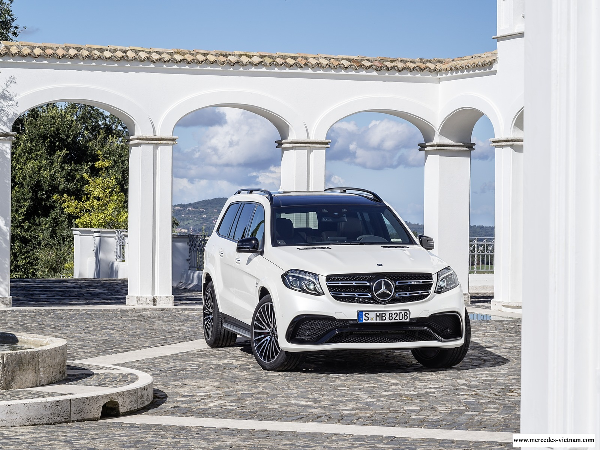Hiện nay, Mercedes-AMG GLS 63 2018 đang được phân phối trên thị trường với các màu sắc như trắng olar (149), xám tenorite (755), đen obsidian (197), bạc iridium (775), xám palladium (792), trắng diamond (799(, nâu citrine (796), xanh cavansite (890), bạc diamond (988), đỏ hyacinth (996).
Mercedes-AMG GLS 63 2018 – Ngoại thất mạnh mẽ
So với phiên bản GLS tiêu chuẩn thì bản Mercedes-AMG GLS 63 2018 không có nhiều khác biệt ở thiết kế ngoại thất, trong phần này chúng ta sẽ tìm hiểu về ngoại hình của anh chàng cá tính này. Mercedes-AMG GLS 63 2018 được các nhà thiết kế đầy tài năng đến từ Mercedes-AMG khoác lên mình bộ cánh vô cùng đẹp mắt với số đo ba vòng dài x rộng x cao lần lượt là 5162 x 1982 x 1850 mm và chiều dài cơ sở là 3075 mm, xe có thể chịu trọng tải lớn nhất là 2580/ 710 kg.
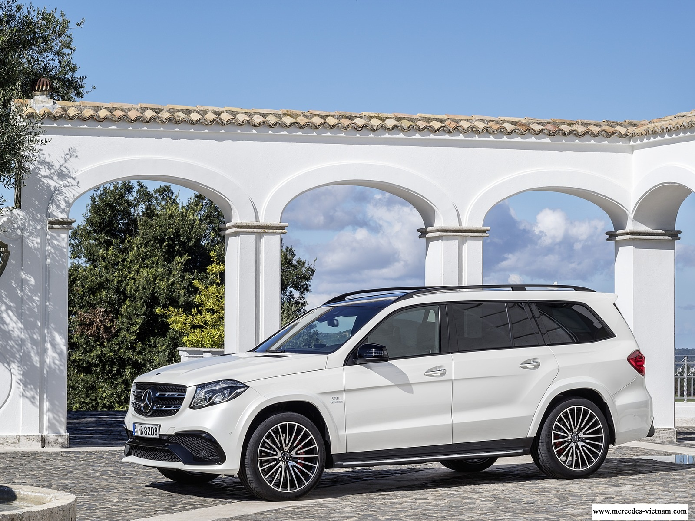Đầu tiên, chúng ta sẽ đến với bộ mặt của chiếc Mercedes-AMG GLS 63 2018 .Nếu trong lằn đầu gặp mặt chắc chắn bạn sẽ bị ấn tượng bởi khuôn mặt điển trai này, đặc biệt là chiếc mũi – chính là hệ thống tản nhiệt đầy cá tính. Hệ thống lưới tản nhiệt đã được thay đổi nhiều so với người anh em của chính mình, thay vì một thanh ngang được mạ hợp kim với dáng vẻ chắc chắn nổi bật trên hệ thống lưới mắt cáo thì bây giờ là hai thanh ngang làm bắng kim loại sáng bóng được thiết kế tính tế, không quá hầm hố nhưng cũng đủ phần mạnh mẽ để chứng tỏ hắn ta thực sự là một người đàn ông mạnh mẽ nhưng cũng vô cùng tinh tế. Nổi bật trên hệ thống lưới mắt cáo của hệ thống tản nhiệt chính là logo ngôi sao ba cánh chính là thương hiệu đã làm lên lịch sử của Mercedes-AMG.
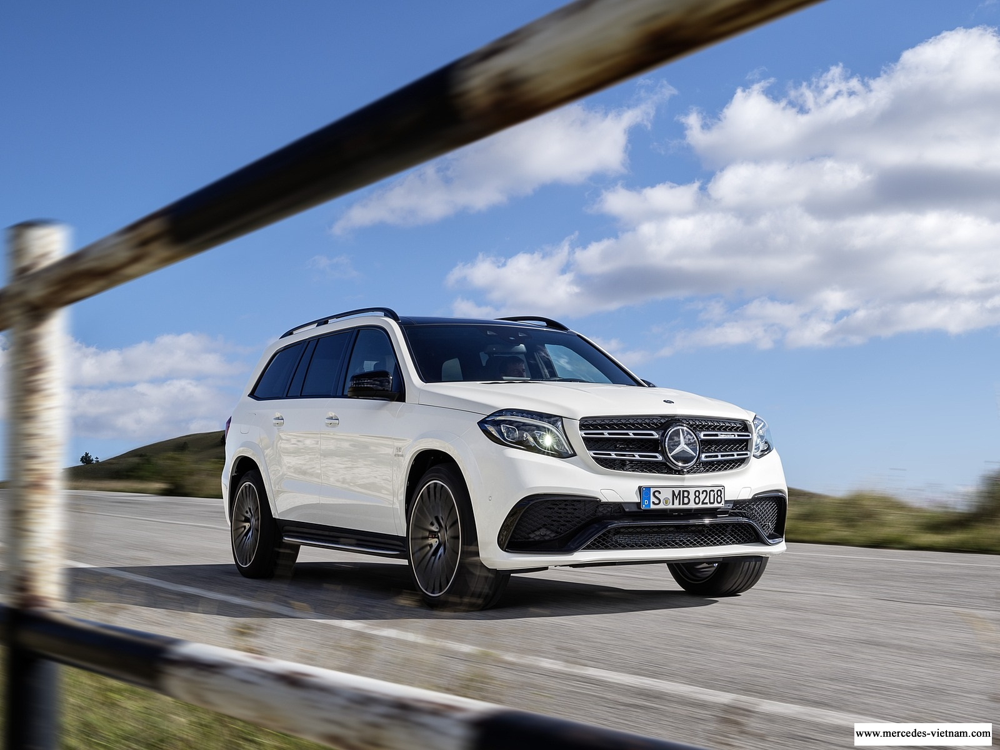Tiếp đến phần cản trước đã được thiết kế vô cùng cơ bới với thanh ngang được mạ crom uốn lượn theo thiết kế của chiếc áo, thêm vòa đó phần hốc hút gió lớn hơn được AMG thiết kế. Trên nắp ta pô có 2 đường gân dập nổi kéo dài hết trục A dến phần hệ thống tản nhiệt. Phần hệ thống lưới tản nhiệt có vẻ được đặt ở vị trí cao hơn so với những người anh em khác. Nếu bạn quan sát kỹ sẽ thấy gương mặt của chàng Mercedes-AMG GLS 63 2018 đã được cải tiến sao cho cá tính hơn với 2 đường dập ở bên nắp ta pô vô cùng cuốn hút.Tiếp đến phần cản trước đã được thiết kế vô cùng cơ bới với thanh ngang được mạ crom uốn lượn theo thiết kế của chiếc áo, thêm vòa đó phần hốc hút gió lớn hơn được AMG thiết kế. Trên nắp ta pô có 2 đường gân dập nổi kéo dài hết trục A dến phần hệ thống tản nhiệt. Phần hệ thống lưới tản nhiệt có vẻ được đặt ở vị trí cao hơn so với những người anh em khác. Nếu bạn quan sát kỹ sẽ thấy gương mặt của chàng Mercedes-AMG GLS 63 2018 đã được cải tiến sao cho cá tính hơn với 2 đường dập ở bên nắp ta pô vô cùng cuốn hút.
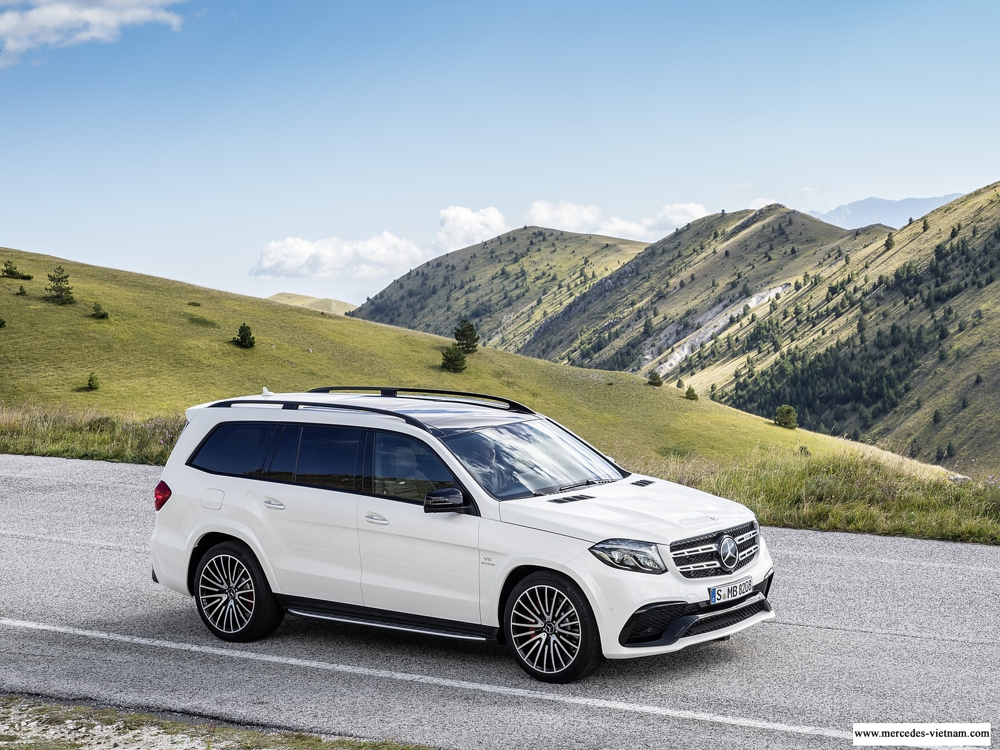Mercedes-AMG GLS 63 2018 – Nội thất thể thao nhiều tiện nghi
Mercedes-AMG GLS 63 2018 được mệnh danh là S – Class của phân khúc xe thể thao đa dụng của hãng xe Đức, Mercedes-AMG GLS 63 2018 mang trong mình nhiều đặc điểm sang trọng ở nội thất. Trong phần này chúng ta sẽ cùng nhau khám phá những điều bất ngờ đến từ chàng trai cá tính
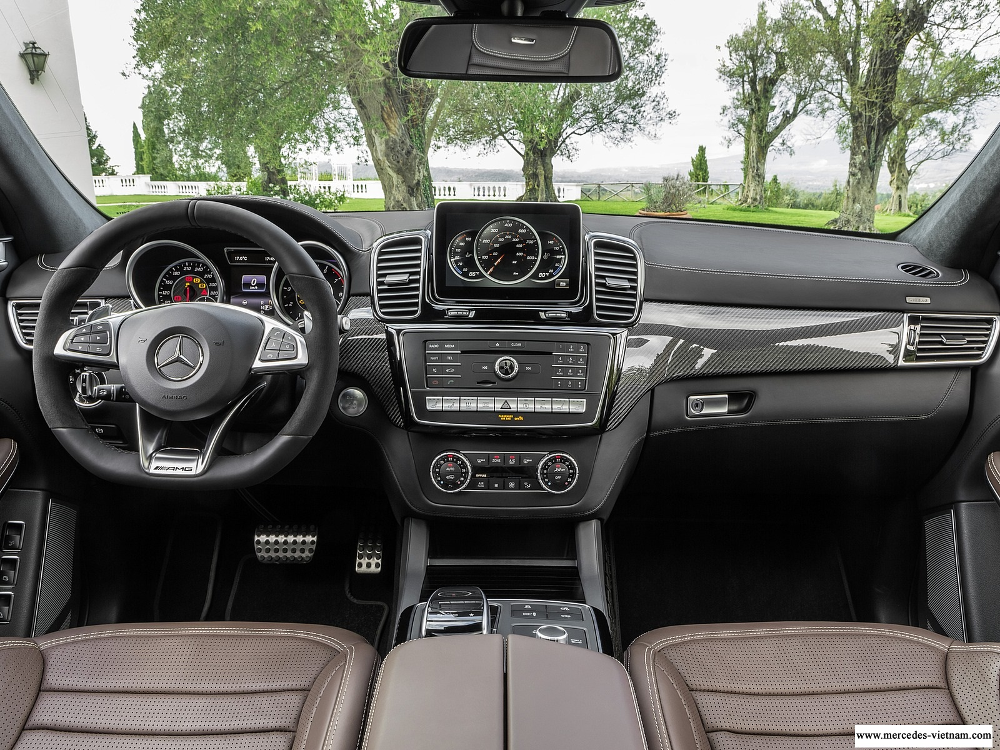Đầu tiên, chúng ta sẽ đến với khu ghế trước của xe. Tay lái của Mercedes-AMG GLS 63 2018 được thiết kế theo phong cách thẻ thao AMG với huy hiệu AMG ở trên lưng ghế trước mang đến cá tính riêng cho bản thân mình, tiếp đến bảng đồng hồ được thiết kế theo phong cách thể thao AMG vô cùng đẳng cấp, bàn đạp cũng được thiết kế theo phong cách thể thao và được ốp thép không gỉ giúp cho chủ sở hữu tha hồ chinh phục mọi cung đường. Ngay cả thảm sàn cũng được thiết kế theo phong cách thể thao AMG, và ốp bệ cửa trước được in logo AMG phát sáng chứng tỏ đẳng cấp của người sở hữu. Nội thất của Mercedes-AMG GLS 63 2018 được ốp sơn carbon là đối thủ của thời gian.Thêm vào đó, hệ thống kình cách âm, cánh nhiệt và kính ở khoang sau màu tới đem đến một không gian cá nhân, riêng tư và cũng đem đến những giây phút nghỉ ngơi tuyệt vời nhất.
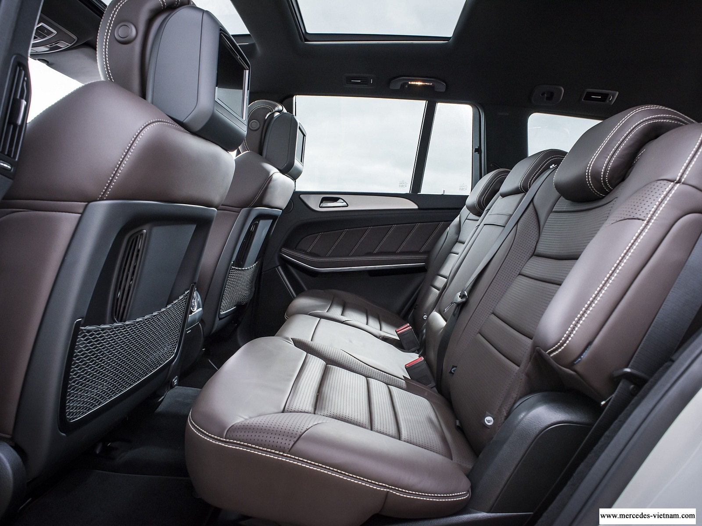 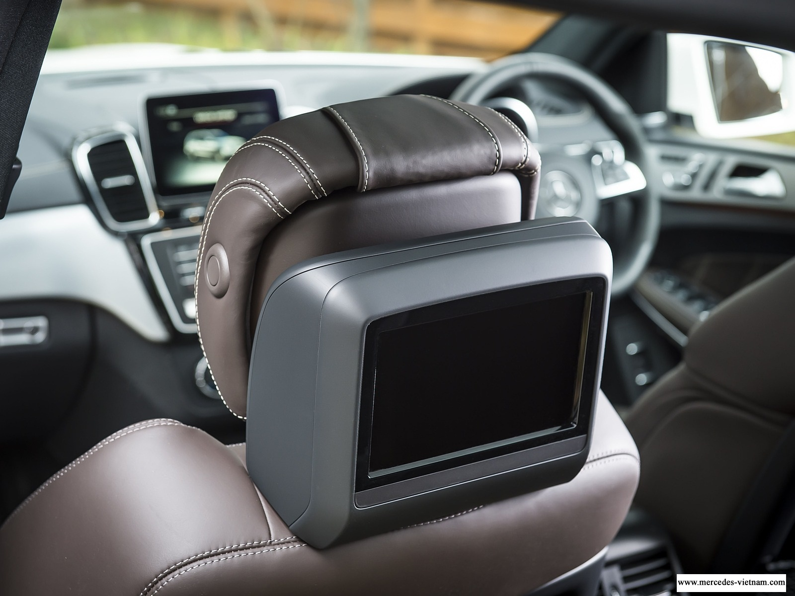 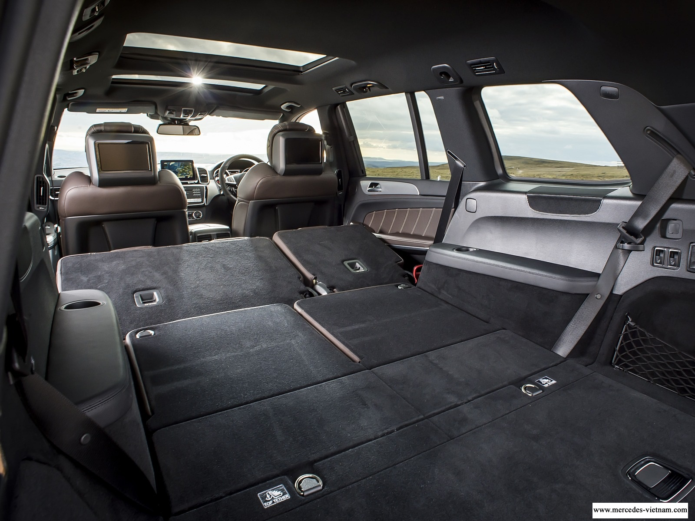Hệ thống ghế của Mercedes-AMG GLS 63 2018 chắc chắn làm bạn phải ấn tượng. Đầu tiên, ghế người lái và hành khách phía trước được điều chỉnh bằng điện có thể điều chỉnh độ cao ghế, lưng ghế và độ nghiêng, mặt ghế, đệm đỡ lưng và ngay cả tựa đầu cũng có thể điều chỉnh bằng điện mang đến những tiện lợi tốt nhất cho khách hàng. Tiếp theo là bộ nhớ 3 vị trí cho ghế trước, gương chiếu hậu ở bên ngoài và tay lái giúp bạn không cần mất thời gian để điều chỉnh lại ghế, gương và tay lái. Cùng với đó là những tiện nghi tuyệt vời cho hàng ghế trước như hệ thống sưởi giúp làm cơ thể bạn nóng lên và chân không bị đóng giúp cho việc điều khiển xe trở nên dễ dàng hơn, hệ thống thông gió khiến cho bạn có một cảm giác vô cùng thoải mái khi ngồi lâu, đặc biệt trong thời tiết mùa hè do việc ra mồ hồi và cuối cùng là massage cho hàng ghế trước, khiến cho bạn đập tan mọi mệt mỏi trong cuộc sống.
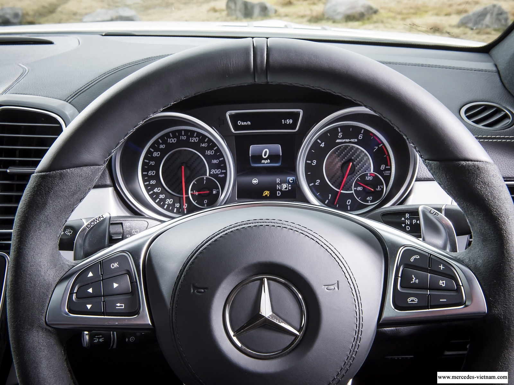 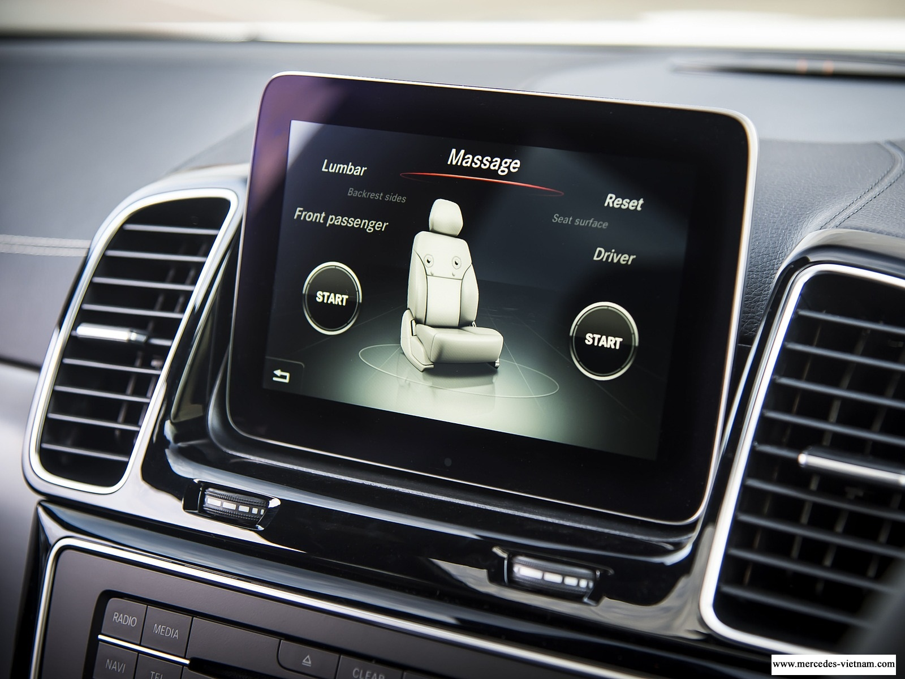 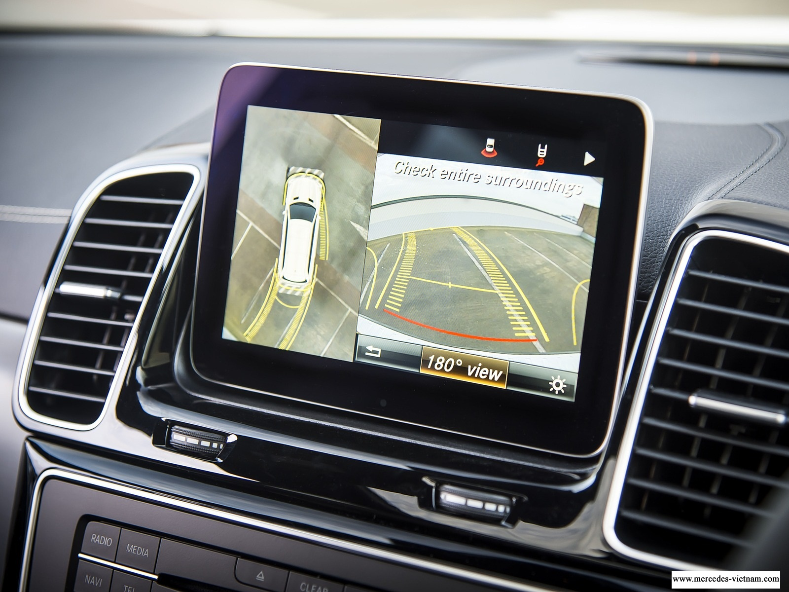Thêm nữa, Mercedes-AMG GLS 63 2018 hàng ghế thứ hai được trang bị hệ thống sưởi và cũng có thể điều chỉnh độ nghiêng gập 60/40; hàng ghế thứ 3 có thể điều chỉnh bằng gập điện. Điều hòa khí hậu tự động đa vùng THERMOTRONIC có thể chinh phục mọi khách hàng, dù là khách hàng có thể lực yếu và hệ thống dẫn đường, định vị vệ tinh toàn cầu GPS tích hợp bản đồ Việt Nam khiến bạn không thể lạc đường.
Mercedes-AMG GLS 63 2018 – Động cơ, an toàn
Mercedes-AMG GLS 63 2018 sử dụng động cơ V8 vô cùng mạnh mẽ, có thể đạt mô men xoắn cực đại là 760 Nm tại vòng quay là 1750 – 5250 vòng/ phút; công suất cực đại là 430 kw tại vòng quay 5500 vòng/ phút và xe sử dụng hộp số tự động 7 cấp AMG SPEEDSHIFT PLUS 7G_TRONIC giúp xe có thể đạt vận tốc tối đa là 250 km/h và xe có thể tăng tốc đạt vận tốc 100 km/h chỉ trong 4, 6 giây đầu tiên. Mercedes-AMG GLS 63 2018 sử dụng 5 chế độ vận hành là ‘Individual, comfort, slippery, sport và sport plus.
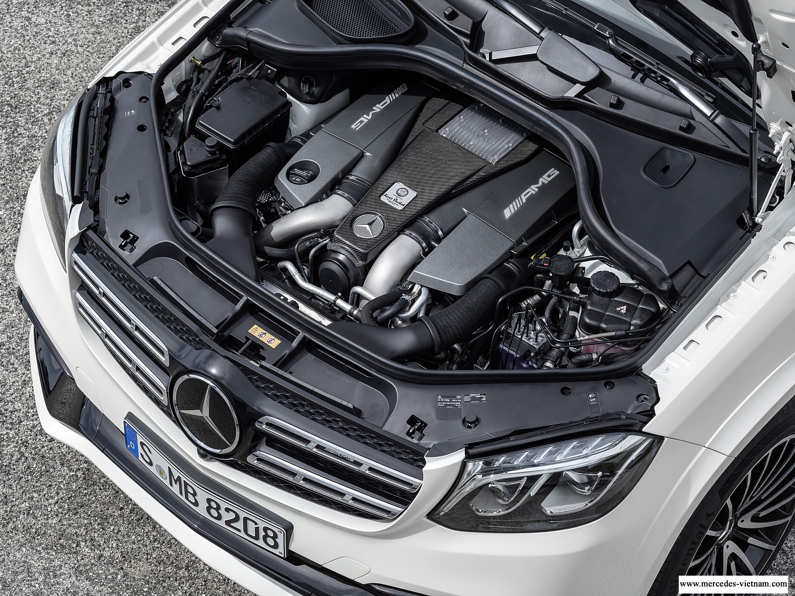Ngoài ra, Mercedes-AMG GLS 63 2018 còn sử dụng một loạt công nghệ an toàn hàng đầu như chức năng ECO stat – stop giúp tự động ngắt động cơ khi xe tạm dừng và giúp giảm thiểu tiêu hao nhiên liệu, khí thải – đây có lẽ là điểm cộng lớn nhất của chiếc Mercedes-AMG GLS 63 vì đã là một trong những chiếc xe đi đầu trong việc bảo vệ môi trường. Chưa hết, Mercedes-AMG GLS 63 2018 còn được trang bị hệ thống hỗ trợ phòng ngừa va chạm với chức năng hỗ trợ tự động giảm tốc; hệ thống hỗ trợ đỗ xe chủ động Active parking assist giúp dò tìm không gian đỗ xe phù hợp; tự động điều khiển tay lái và phanh để đưa xe vào chỗ đỗ rất phù hợp với giao thông ở Việt Nam,..cùng rất nhiều công nghệ an toàn khác.
Trên là một số thông tin về chiếc Mercedes-AMG GLS 63 2018 mà chúng tôi tổng hợp, nếu bạn muốn biết thêm thông tin hãy nhanh chóng liên hệ với chúng tôi để được tư vấn miễn phí và hương những dịch vụ ưu đãi lớn nhất.